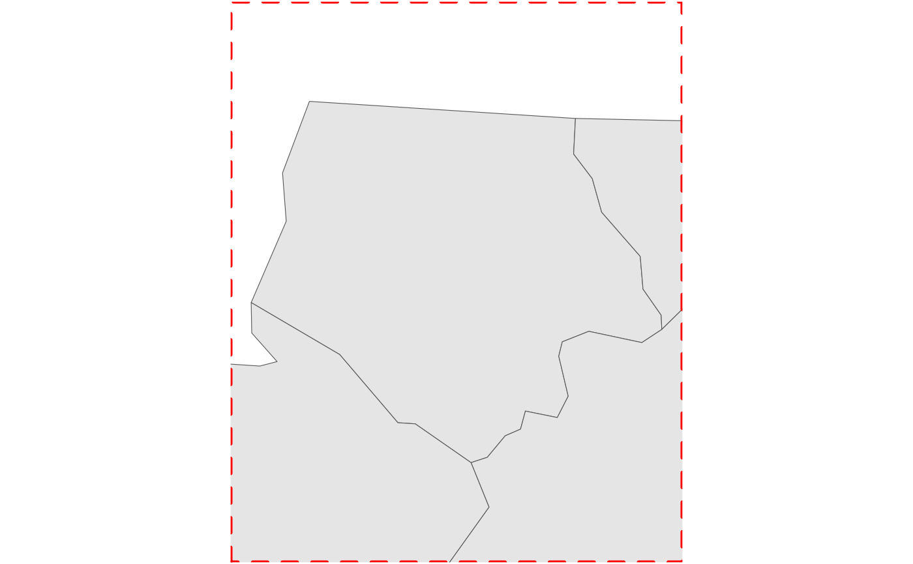

Set map limits to a bounding box with a buffer and set aspect ratio
Source:R/layer_neatline.R
layer_neatline.RdSet limits for a map to the bounding box of a feature using
ggplot2::coord_sf(). Optionally, adjust the x size by applying a buffer
and/or adjust the aspect ratio of the limiting bounding box to match a set
aspect ratio.
Usage
layer_neatline(
data = NULL,
dist = getOption("maplayer.dist"),
diag_ratio = getOption("maplayer.diag_ratio"),
unit = getOption("maplayer.unit", default = "meter"),
asp = getOption("maplayer.asp"),
crs = getOption("maplayer.crs"),
color = "black",
bgcolor = "white",
size = 1,
linetype = "solid",
expand = TRUE,
hide_grid = TRUE,
label_axes = "----",
...
)Arguments
- data
A
sf,sfc, orbboxclass object.- dist
buffer distance in units. Optional.
- diag_ratio
ratio of diagonal distance of area's bounding box used as buffer distance. e.g. if the diagonal distance is 3000 meters and the "diag_ratio = 0.1" a 300 meter will be used. Ignored when
distis provided.- unit
Units for buffer. Supported options include "meter", "foot", "kilometer", and "mile", "nautical mile" Common abbreviations (e.g. "km" instead of "kilometer") are also supported. Distance in units is converted to units matching GDAL units for x; defaults to "meter"
- asp
Aspect ratio of width to height as a numeric value (e.g. 0.33) or character (e.g. "1:3"). If numeric,
get_asp()returns the same value without modification.- crs
The coordinate reference system (CRS) into which all data should be projected before plotting. If not specified, will use the CRS defined in the first sf layer of the plot.
- color
Color of panel border, Default: 'black'
- bgcolor
Fill color of panel background; defaults to "white". If "none", panel background is set to
ggplot2::element_blank()- size
Size of panel border, Default: 1
- linetype
Line type of panel border, Default: 'solid'
- expand
If
TRUE, the default, adds a small expansion factor to the limits to ensure that data and axes don't overlap. IfFALSE, limits are taken exactly from the data orxlim/ylim.- hide_grid
If
TRUE, hide grid lines. Default:TRUE- label_axes
A description of which axes to label passed to
ggplot2::coord_sf(); defaults to '----' which hides all axes labels.- ...
Additional parameters to pass to
ggplot2::coord_sf().
Value
List of ggplot2::coord_sf and ggplot2::theme calls.
See also
Other layer:
layer_frame(),
layer_location_data(),
layer_scaled()
Examples
nc <- sfext::read_sf_path(system.file("shape/nc.shp", package = "sf"))
ggplot2::ggplot() +
layer_location_data(data = nc) +
layer_neatline(data = nc[1, ], asp = 1, color = "red", size = 1.5, linetype = "dashed")

ggplot2::ggplot() +
layer_location_data(data = nc) +
layer_neatline(data = nc[1, ], dist = 20, unit = "mi", color = "none")